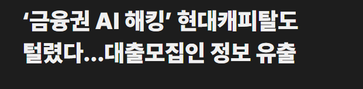
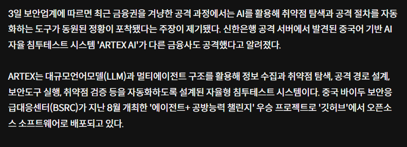

일단 5대은행 전부 털렸고
지역은행 저축은행 각2곳

현대캐피탈도 털림
지금 털린거 파악도 못한(파악즉시 KISA신고해야됨) 은행 및 금융회사들도 많다고 추측되는중

지금 나온 소식으로는 깃헙에서 오픈소스로 풀린 ARTEX AI라는 취약점 자율 침투테스트용 AI를 활용한 공격으로 추정됨
해당 AI는 중국 바이두 보안응급대안센터 프로젝트 챌린지 우승한 소프트웨어이고, 9월 24일까지 버전업이 되고있는상태임
한마디로 해커+개조된 침투테스트용 AI한테 5대은행 + 제2금융권 + 캐피탈 까지 전부 찍먹당했다고 보면될듯
한줄요약 : 작년에도 털리더니 이번에는 AI한테 찍먹당하는구만 백엔드 개발자 외주로 돌리더니 개판이네
토스는 소식없구만